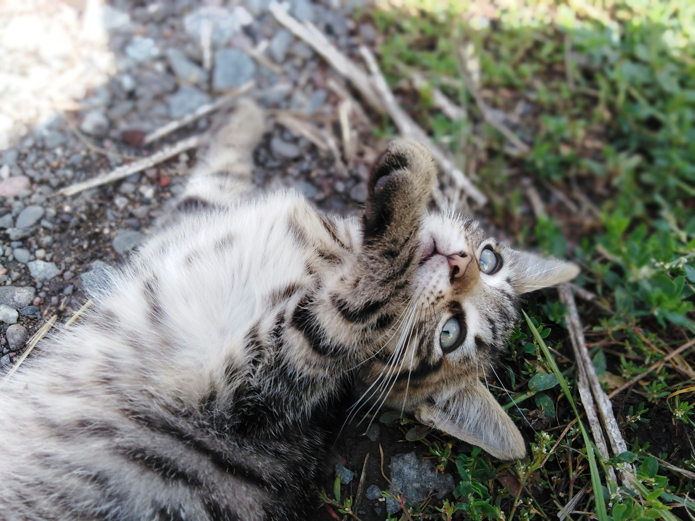

흔히 코리안 쇼트헤어, 줄여서 코숏이라고도 부르는데 한국 토착 고양이들은 품종으로써 관리, 개량, 분류된 적이 없어서 공식 명칭은 아니며 아메리칸 쇼트헤어에서 따온 비공식 명칭이다. 때문에 우리나라 말인 '참고양이'로 부르자거나 최근에 와서 이러한 잡종 개체를 뜻하는 도메스틱 숏헤어 이하 도숏으로 알맞게 부르자는 의견이 대두되고 있다. 품종묘 문서에도 있지만 혈통서가 없다면 아무리 스탠다드와 흡사한 외모 및 특징을 가지더라도 도메스틱 캣으로 분류된다. 대부분 펫샵에서 판매하는 한국 고양이이라 함은 사실 도메스틱 숏헤어(혹은 도롱)인 셈이다. 잡종이라서 성격과 외모를 특정하기 힘들 정도로 다양하다. 